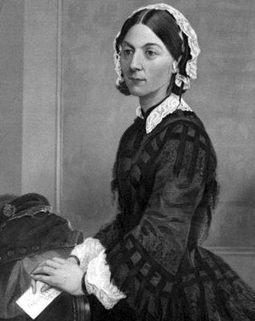
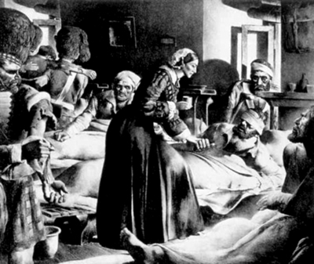

“Dini cemiyet falan kurmak istemiyorum, aksine iyi para ödenen bir meslek dalı kurmak istiyorum. Ahlaken, ruhen, bedenen hemşirelik mesleği için gerekli koşullara sahip, hangi sınıf ve mezhepten olursa olsun her kadına en iyi eğitimi vermek ilkem olmuştur... Hastalara yardım etmek isteyen kişi duygusal bir hayalperest değil, aksine zor işleri seven, sağlam biri olmalıdır.”
Florence Nightingale
Zengin, üst sınıfa mensup ve iyi ilişkilere sahip İngiliz ailesi Nightingalelerin kızı olarak, Tuscany Grand Düklüğü sınırları içindeki Florence kentinde doğdu. Küçük yaşta maneviyata yöneldi. Anne ve babasının bütün itirazlarına rağmen hemşire olmak istiyordu. Soyluluk ve hemşirelik!.. Bu da neydi Allah aşkına? Lakin hemşire olma isteği, genç kızı avuçlarına almıştı bir kez. Belki de onun statüsündeki bir kadın için üstlendiği görev, kendisine biçilen eş ve annelik rollerine karşı bir isyan niteliği taşıyordu. O günlerde hemşirelik, fakir kadınların ve başka çaresi olmayanların tercihi olarak görülüyordu. Yine de Florence, annesinin bütün öfkesi ve engellemelerine rağmen hemşireliğe adım attı.
Aralık 1844’te, devlet yardımıyla yaşayan bir yoksulun, Londra’daki bir hastanede ölmesi toplumsal bir skandala yol açmış, ama aynı zamanda kahramanımızın ne kadar doğru bir yolda olduğunu göstermişti. Sağlık hizmetleri dökülüyordu. Nightingale, geliştirilmiş tıbbi imkânların ve hastane şartlarının iyileştirilmesinin önde gelen savunucusu oldu.
Florence, 1850’de Kaiserswerth-am-Rhein’deki Lutheryan topluluğunu ziyaret etti. Kilisede hayır işleriyle görevli kadınların, hastalıkları nasıl tedavi ettiklerini gözlemledi. Burada edindiği tecrübeler Nightingale’in hayatındaki önemli dönüm noktalarından biri olacaktı. Öğrendiklerini Kilise Görevlisi Kadınlar İçin Tedavide Pratik Uygulamalar isimli bir kitaba döktü. Hemşireliğin kitabını yazmaya kararlıydı...
Kırım Savaşı ve Üsküdar günleri
Florence Nightingale’in hemşirelikte çığır açacağı an, bütün dikkatlerin onun üzerinde toplanmasını sağlayan Kırım Savaşı olmuştu. Mart 1854’te İngiltere ve Fransa, Rusya’ya savaş ilan etmiş, Eylül ayında müttefik birlikler Kırım’a çıkmıştı. Kan gövdeyi götürüyordu. Times gazetesinde, cephedeki İngiliz askeri hastanelerindeki yaralılarla ilgili dehşet verici haberler çıkıyordu. Savaş Bakanı Sidney Herbert, bu duruma “Niçin şefkatli hemşirelerimiz yok?” diyerek isyan edecek ve kendisine yazdığı bir mektupla, bu iş için en uygun ismi göreve çağıracaktı: Florence Nightangale’i.
Ekim 1854’te Nightingale ve kendisinin eğittiği 38 gönüllü hemşire İstanbul’daki İngiliz kampına gönderildi. Üsküdar’daki Selimiye kışlasına ulaşan Florence, durumu çok kötü olan yaralı askerlerle karşılaştı. Az sayıdaki sağlık personeli de yetkililerin ilgisizliği nedeniyle mağdurdu. İlaç kıtlığı vardı, hijyene dikkat edilmiyordu ve yaralılarda ölümcül enfeksiyonlar oluşuyordu. Hastaların gıda ihtiyacı tam anlamıyla karşılanamıyor, sağlık ekipmanı eksikliği hissediliyordu. Yine de o ne yapması gerektiğini biliyordu.
Arkadaşlarıyla birlikte öncelikle hastane ve ekipmanların baştanbaşa temizliğine, hasta bakımının yeniden organizasyonuna soyundu. Lakin Üsküdar’da bulunduğu sürece ölüm oranı düşmemiş, aksine artmaya başlamıştı. Üsküdar’da geçirdiği ilk kış boyunca 4 bin 77 asker savaş yarasından ziyade, tifo, tifüs, kolera ve dizanteri gibi hastalıklar nedeniyle yaşamını yitirdi. Ve ilginçtir, Florence’in hastanesindeki ölüm oranı, doğudaki hastaneler içindeki en yüksek orandı! Hastanenin geçici barakalarındaki sağlık şartları, kalabalık hasta sayısı için son derece elverişsizdi. Eksik havalandırma sistemi her şeyi daha da kötüleştiriyordu. İngiliz hükümetinin büyük bir özveriyle geceli gündüzlü çalışan Florence’a destek ekibi göndermesiyle birlikte, ölüm oranları hızlı bir şekilde azalacaktı.

Mesleği uğruna ülkesinden binlerce kilometre uzaklara gitmekten çekinmedi.
Florence, bu yüksek orandaki ölümlerin yetersiz gıda ve ilaçlar ile az sayıdaki personelden kaynaklandığına inanıyordu. İngiltere’ye dönüşünden sonra da düşüncesi değişmedi ve orduya sunmak için, askerlerin çok kötü koşullarda yaşadıklarını kanıtlamaya yönelik ipuçları toplamaya başladı. Ama bulguları kendisini yalanlayacaktı. Zira ölümlerin çoğu, bizzat kendisinin sorumluluğunda olan ‘sıhhi temizlik’ şartlarından kaynaklanıyordu. Bu durum, Florence Nightingale efsanesine küçük çaplı bir darbe vursa da buradan elde ettiği acı tecrübeler, bundan sonraki kariyerini önemli ölçüde etkileyecekti. Mekân temizliğinden ziyade sıhhi temizliğe eğilen bu sağlık gönüllüsü kadın, barış zamanında askeri ölümleri azaltmada önemli rol oynayarak, hastanelerdeki sağlık koşullarının yeniden yapılandırılmasına dikkat çekecekti.
Lambalı Kadın efsanesi doğuyor
Kırım Savaşı’nın zor koşullarında gece gündüz demeden yaralılara baktığı için askerler Florence Nightingale’e ‘Lambalı Kadın’ ismini vermişlerdi. The Times’ta çıkan bir haberde, ‘bakıcı melek’ olarak nitelenen Nightingale’in siluetinin hiç abartı olmaksızın hastanenin bütün koridorlarında görüldüğü, bütün ihtiyaç sahiplerinin yüzlerine onu görünce gülümseme ve huzur yayıldığı yazıyordu. Bütün sağlık personeli akşam evine gittiğinde, o gecenin sessizliğinde elindeki lambayla dolaşıyor, ölüme direnmeye çalışan takatsiz hastalara tek başına güven veriyordu. Bu, İngiltere’nin en uzun soluklu efsanelerinden biri olacak ve tarihçi Raphael Samuel’in dediği gibi, İngiltere’nin kahramanlarından biri olacaktı.

Elinde lambasıyla gece gündüz çalışan Nightingale’e hastalar
“Lambalı Kadın” diyorlardı.
Kahraman eve dönüyor
BBC’ye göre, Florence Nightingale 1857’de İngiltere’ye bir kahraman olarak dönmüş ve neredeyse Kraliçe Victoria’dan daha meşhur olmuştu. Lakin aşırı çalışmanın bedeninde yarattığı tahribatla Malta Humması olarak da adlandırılan brusella hastalığının pençesine düşmüştü. Artık bakılması gereken kendisiydi. Yine de durmaya niyeti yoktu.
Yatağından kalkmaması yönündeki tavsiye ve kısıtlamalara rağmen Kraliçe Victoria’nın bir davetine karşılık verdi ve Ordu Sağlığı Kraliyet Komisyonu’nun yeniden yapılandırılmasında önemli rol oynadı. Ancak, kadın olduğu için Komisyon’da resmi personel unvanını alamamıştı!
Sağlık turizmine ilk dikkat çeken o oldu
Florence Nightingale henüz Türkiye’deyken, onun adına bir yardım fonu açılmış ve toplanan yardımlarla hemşire eğitimini sağlamaya dönük yatırımlar yapılması kararı alınmıştı. Nightingale ayrıca 1856’da Türkiye’den yolladığı mektuplarla, bugün ‘sağlık turizmi’ adı verilen yeni bir konseptin öncüsü de oluyordu. Florence, Türkiye’deki kaplıcaları övdüğü mektuplarında hasta bakım yolları, perhiz bilgileri ve diğer önemli noktalarda hastalar için aydınlatıcı bilgiler veriyordu.
1859’da Nightingale fonunda 45 bin sterlinden fazla para birikmişti ve bu parayla St. Thomas Hastanesi bünyesinde Nightingale Yetiştirme Okulu kuruldu. (Londra’daki bu hastanenin şimdiki adı Florence Nightingale Hemşire ve Ebelik Okuludur)
Düşünceleriyle hemşireliği kurumsallaştırdı
Nightingale, Hemşirelik Notları isimli kitabını 1860’ta yayımladı. Hemşireliğe basit bir giriş niteliğindeki kitap, iyi bir tiraj yakaladı. Nightingale, bundan sonraki hayatını hemşirelik mesleğini geliştirmek, modern bir forma sokmak ve icra edenlere para ve saygınlık kazandıran bir mesleğe dönüştürmek için harcamak istiyordu. Hükümet ilaç sektörünün yeniden organize edilmesinde de Nightingale’nin tavsiyelerine başvurdu.
Nightingale, düşünceleriyle Birleşik Devletler Sağlık Komisyonu’nun kurulmasına da ilham verdi. 1869’da Kadınlar Medikal Koleji’ni açtı, bir yıl sonra da ‘Amerika’nın ilk eğitimli hemşiresi’ Linda Richards’ı yetiştirdi. Çırağı Richards, ABD ve Japonya’ya giderek hemşireliğin büyük öncülerinden biri olacaktı.
Ve bir gün, bu kadar özverili ve yoğun çalışmanın faturasının kesildiği an gelecekti. Florence Nightingale, modern tıpta kronik yorgunluk sendromu olarak bilinen rahatsızlığa yakalanmıştı. Önce görme yetisini kaybetti; sonra da, 13 Ağustos 1910’da, doksan yaşındayken Park Lane South Sokağı’ndaki evinde, geride insanlığa hizmet idealiyle örülmüş çileli bir hayat bırakarak bu dünyadan göçtü.
Belki Nightingale’in görmeye ömrü yetmedi, ama hayatını adadığı hemşirelik, zamanla saygın bir meslek oldu. Peki, kazandıran bir meslek oldu mu? Kim bilir, belki de bunun için yeni bir Nightingale’in gelmesini bekleyeceğiz.
NOTLAR